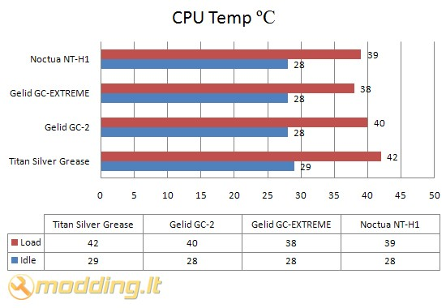

Noctua NT-H1 termopasta
 Kokybiška termopasta gali gerokai pagerinti CPU aušinimą. Neseniai mano kolegos ExT parašytas straipsnis apie termopastas tai puikiai įrodo. Tesdamas termopastų testavimus pristatau jums austrų kompanijos Noctua termopastą NT-H1. Su šia termopasta komplektuojami bene visi Noctua procesorių aušintuvai. Pažiūrėkime, ko ji verta.
Kokybiška termopasta gali gerokai pagerinti CPU aušinimą. Neseniai mano kolegos ExT parašytas straipsnis apie termopastas tai puikiai įrodo. Tesdamas termopastų testavimus pristatau jums austrų kompanijos Noctua termopastą NT-H1. Su šia termopasta komplektuojami bene visi Noctua procesorių aušintuvai. Pažiūrėkime, ko ji verta.Žvilgsnis iš arčiau
Noctua NT-H1 termopasta pakuotė permatoma, matome termopastos švirkštą. Ant pakuotės nurodytos termopastos savybės bei pavaizduota panaudojimo instrukcija. Pateikta instrukcija 6 užienio kalbomis. Nurodytos naudojimosi atsargumo priemonės.
Specifikacijos
- Tūris: 1.4 ml ( ~15 panaudojimų)
- Tankis: 2.49 g/m ³
- Spalva: pilka
- Galiojimo laikas: prieš naudojimą 2 metai
- Rekomenduojamas naudojimo ant CPU laikas: 3 metai
- Darbinė temperatūra: -50 ⁰C iki +110 ⁰C
- Rekomenduojama darbinė temperatūra: -40 ⁰C iki +90 ⁰C
- Nelaidi elektrai
- Gali būti naudojama aušinime kompresoriais (minusinės temperatūros)
Noctua NT-H1 termopasta pateikiama švirkšte. Jis patogiai uždaromas kamšteliu, kuris turi srėgį - praktiškai nelieka galimybės, jog termopastos kamštelis atsidarys. Termopastos konsistencija labai gera - ji nei per skysta, nei per tiršta. Lengvai užtepama ant paviršiaus, taipogi nesunkiai nuvaloma paprasčiausiu minkštu popieriumi.
Rezultatai
Testavimo sistema:
- CPU Cooler - Noctua NH-U12P SE2
- Case - Antec Mini P180
- Mainboard - Asus M2N68-AMSE2
- CPU - AMD ATHLON 64 X2 Dual-Core 5000+ AM2 (65W)
- RAM - Corsair DDR2 KIT 2X1G 800MHZ TWIN2X2048-6400 G
- HDD - SEA BARRACUDA 160GB 7200rpm
- PSU - Cooler Master Silent Pro M700
- Case Fans - Noctua NF-S12B FLX 120mm (1200rpm, 100.6 m³/h, 1.31 mm H2O), Antec 200mm TriCool (400rpm, 39 CFM)
Procesoriaus (CPU) temperatūra testuojama Idle ir Load rėžimais. Load rėžimui naudojama Orthos programa. Temperatūros rodmenys stebėti SpeedFan 4.39 bei PC Probe II V1.04.74 programomis. Testavimams naudotas Antec Mini P180 korpusas galinėje sienelėje turi Noctua NF-S12B FLX 120mm orą ištraukiantį aušintuvą (1200rpm, 100.6 m³/h, 1.31 mm H2O), o taip pat viršuje esantį, orą ištraukiantį, Antec 200mm TriCool ventiliatorių (400rpm, 39 CFM).
Testuose Noctua NT-H1 termopasta palyginta su Titan Silver Grease, Gelid GC-2 bei Gelid GC-EXTREME termopastomis.

Testuotos NT-H1 termopastos rezultatas geras: testuose ji nusileido tik vienai termopastai - Gelid GC-EXTREME, bei aplenkė kitas, teste dalyvavusias, termopastas. Load rėžime NT-H1 termopastos rezultatas buvo 39 ⁰C, o Idle 28 ⁰C.
Išvados
Pliusai:
- geri aušinimo rezultatai
- patogus aplikatorius
- gera konsistencija - lengvai tepama
- didelis darbinės temperatūros diapazonas
- prieinama kaina (~20Lt)
Minusai:
- rinkinyje nėra tepimo mentelės
 Noctua NT-H1 termopasta testuose parodė gerus rezultatus ir nusileido tik vienai testuose dalyvavusiai termopastai. Didžiausias NT-H1 termopastos privalumas - gera konsistencija, todėl ją lengva užtepti ar nuvalyti. Švirkšte termopastos turėtų užtekti ~15 panaudojimo kartų (naudojant ant CPU) - vartotojui, kuris nekeičia CPU aušintuvų dažnai, šio termopastos kiekio pakaks ilgam. Šis gaminys yra geras pasirinkimas už protingą kainą - Noctua NT-H1 termopastos kaina ~20Lt.
Noctua NT-H1 termopasta testuose parodė gerus rezultatus ir nusileido tik vienai testuose dalyvavusiai termopastai. Didžiausias NT-H1 termopastos privalumas - gera konsistencija, todėl ją lengva užtepti ar nuvalyti. Švirkšte termopastos turėtų užtekti ~15 panaudojimo kartų (naudojant ant CPU) - vartotojui, kuris nekeičia CPU aušintuvų dažnai, šio termopastos kiekio pakaks ilgam. Šis gaminys yra geras pasirinkimas už protingą kainą - Noctua NT-H1 termopastos kaina ~20Lt.
Modding.lt komanda dėkoja Jakob Dellinger iš www.noctua.at už apžvalgai suteiktą produktą.
Jei norėsite pakomentuoti mano straipsnį arba pareikšti savo nuomonę, apsilankykite Modding.lt forume.


{kind=link}
{kind=link}
{kind=link}
{kind=link}
{kind=link}
{kind=link}